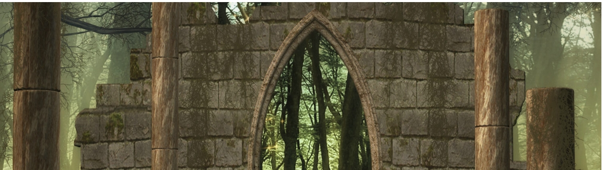

Historical fantasy
Historical fantasy is a category of fantasy and genre of historical fiction that incorporates fantastic elements (such as magic) into a more "realistic" narrative. There is much crossover with other subgenres of fantasy; those classed as Arthurian, Celtic, or Dark Ages could just as easily be placed in historical fantasy. Stories fitting this classification generally take place prior to the 20th century.
Films of this genre may have plots set in biblical times or classical antiquity. They often have plots based very loosely on mythology or legends of Greek-Roman history, or the surrounding cultures of the same era.
Celtic fantasy
Celtic fantasy has links to historical fantasy and Celtic historical fiction. Celtic historical fantasy includes such works as Katharine Kerr's Deverry series, or Teresa Edgerton's Green Lion trilogy. These works are (loosely) based on ancient Celtic cultures. The separate folklore of Ireland, Wales, and Scotland has sometimes been used indiscriminately, sometimes with great effect, as in Paul Hazel's Finnbranch trilogy, Yearwood (1980), Undersea, (1982) and Winterking (1985); other writers have distinguished to use a single source.
Notable works inspired by Irish mythology included James Stephens' The Crock of Gold (1912), Lord Dunsany's The Curse of the Wise Woman (1933), Flann O'Brien's humorous At Swim-Two-Birds (1939), Pat O'Shea's The Hounds of the Morrigan (1985) and novels by Peter Tremayne, Morgan Llywelyn and Gregory Frost.
The Welsh tradition has been particularly influential, which has to do with its connection to King Arthur and its collection in a single work, the epic Mabinogion. One influential retelling of this was the fantasy work of Evangeline Walton: The Island of the Mighty, The Children of Llyr, The Song of Rhiannon, and Prince of Annwn. A notable amount of fiction has been written in the Welsh area of Celtic fantasy; other notable authors of Welsh Celtic fantasy include Kenneth Morris, John Cowper Powys, Vaughan Wilkins, Lloyd Alexander, Alan Garner, and Jenny Nimmo.
Scottish Celtic fantasy is less common, but James Hogg, John Francis Campbell (The Celtic Dragon Myth, 1911), Fiona MacLeod, William Sharp, George Mackay Brown and Deborah Turner Harris all wrote material based on Scottish myths and legends
Fantasy based on the Breton folklore branch of Celtic mythology does not often appear in the English language. However, several noted writers have utilized such material; Robert W. Chambers' The Demoiselle d'Ys (from The King in Yellow, 1895) and A. Merritt in Creep, Shadow! (1934) both drew on the Breton legend of the lost city of Ys, while "The Lay of Aotrou and Itroun" (1930) by J. R. R. Tolkien is a narrative poem based on the Breton legend of the Corrigan..
Historical view
The label first came into wide use after many science fantasy stories were published in the American pulp magazines, such as Robert A. Heinlein's Magic, Inc., L. Ron Hubbard's Slaves of Sleep, and Fletcher Pratt and L. Sprague de Camp's Harold Shea series. All were relatively rationalistic stories published in John W. Campbell Jr.'s Unknown magazine. These were a deliberate attempt to apply the techniques and attitudes of science fiction to traditional fantasy subjects. The Magazine of Fantasy and Science Fiction published, among other things, all but the last of the Operation series, by Poul Anderson.
Henry Kuttner and C. L. Moore published novels in Startling Stories, alone and together, which were far more romantic. These were closely related to the work that they and others were doing for outlets like Weird Tales, such as Moore's Northwest Smith stories
Ace Books published a number of books as science fantasy during the 1950s and 1960s.
The Encyclopedia of Science Fiction points out that as a genre, science fantasy "has never been clearly defined", and was most commonly used in the period between 1950 and 1966
The Star Trek franchise created by Gene Roddenberry is sometimes cited as an example of science fantasy. Writer James F. Broderick describes Star Trek as science fantasy because it includes semi-futuristic as well as supernatural/fantasy elements such as The Q. According to the late science fiction author Arthur C. Clarke, many purists argue that Star Trek is science fantasy rather than science fiction because of its scientifically improbable elements, which he partially agreed with.